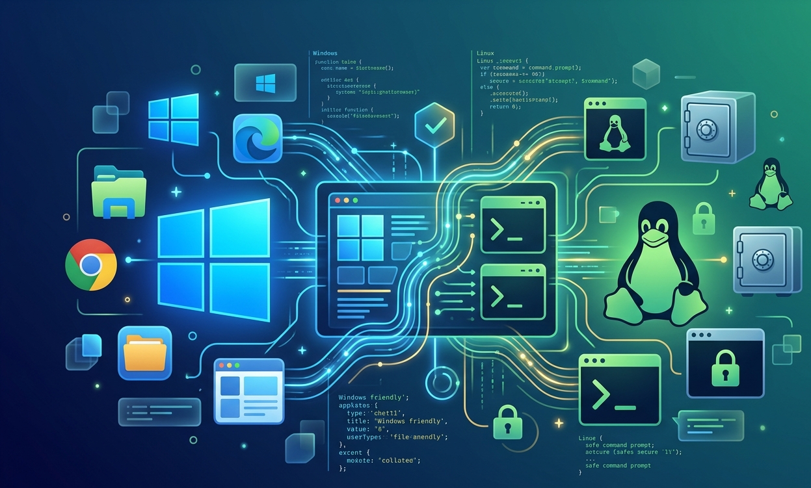
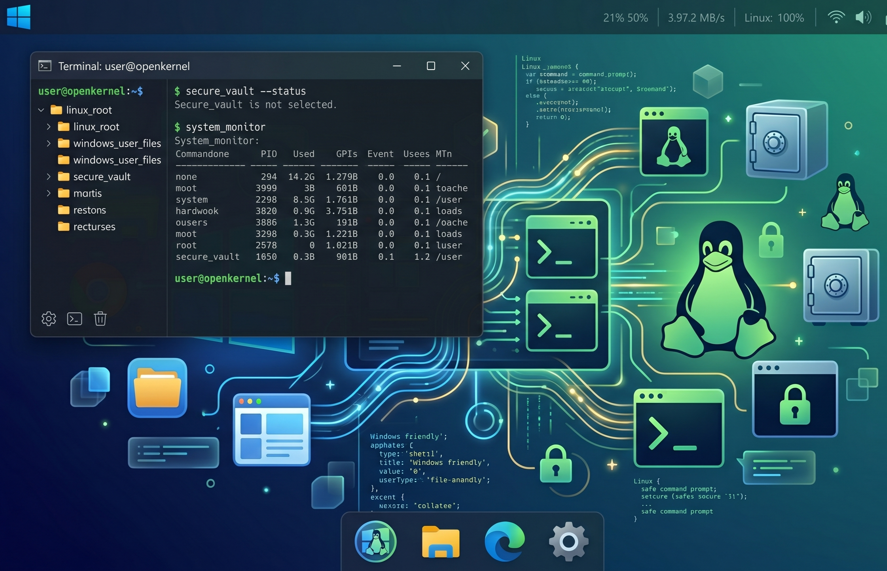
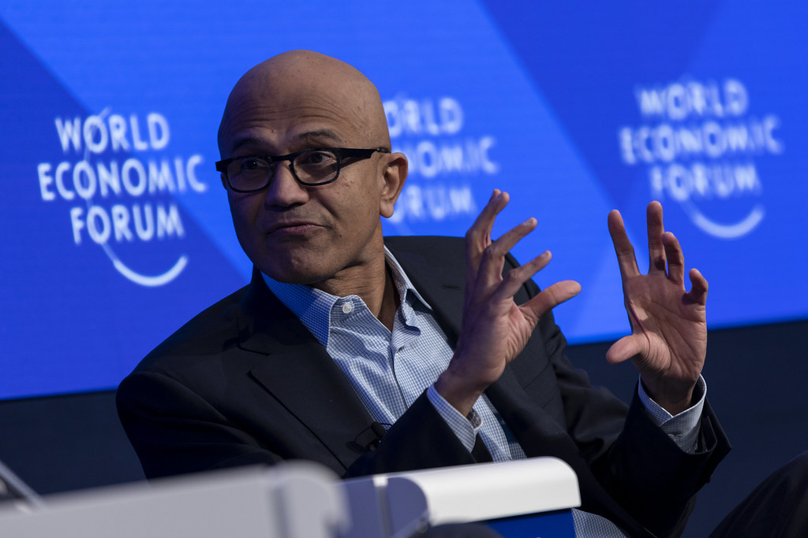

Microsoft e Linux lançam o "OpenKernel"
Sistema híbrido une a interface do Windows à segurança do núcleo Linux em um projeto conjunto entre Nadella e Torvalds.

Por Redação Tech Paper
O que antes era considerado impossível aconteceu. Em uma conferência conjunta em Seattle, a Microsoft e a Linux Foundation anunciaram o OpenKernel, um sistema operacional revolucionário que encerra décadas de rivalidade. O projeto é a culminação da filosofia "Microsoft Loves Linux", transformando o Windows não mais em um sistema isolado, mas em uma interface de alto nível rodando sobre um núcleo Linux customizado.
O melhor de dois mundos
O OpenKernel mantém a experiência de usuário (UX) do Windows 11, com seu menu iniciar, janelas e facilidade de uso, mas substitui o antigo kernel NT pelo robusto e seguro núcleo Linux. Para o usuário final, nada muda visualmente; para o sistema, isso significa uma estabilidade sem precedentes, atualizações que não exigem reinicialização e uma resistência nativa a malwares que historicamente assolam o ecossistema da Microsoft.

Imagem de dentro do sitema OpenKernel
Imagem gerada por https://gemini.google.com/
A morte do WSL e o nascimento da performance nativa
Durante anos, desenvolvedores utilizaram o WSL (Windows Subsystem for Linux) para rodar ferramentas de programação dentro do Windows. Com o OpenKernel, essa camada de tradução desaparece. Agora, compiladores, Docker e servidores rodam de forma 100% nativa. Linus Torvalds, criador do Linux, afirmou que o projeto garante que a liberdade do código aberto agora terá o alcance massivo dos desktops da Microsoft. "Não estamos apenas colocando o Linux dentro do Windows; estamos reconstruindo o Windows sobre a fundação mais sólida da computação moderna", declarou Satya Nadella durante o anúncio.

Satya Nadella - Diretor Executivo da Microsoft
Imagem tirada de https://www.flickr.com
Segurança corporativa em novo patamar
A principal vantagem para o setor empresarial é a segurança. O OpenKernel herda o sistema de permissões e a arquitetura de módulos do Linux, o que torna ataques de Ransomware e vírus de registro muito mais difíceis de serem executados. A Microsoft confirmou que o sistema será oferecido como uma atualização gratuita para usuários do Windows 11 Pro e Enterprise a partir do próximo semestre.
Este marco histórico sinaliza uma nova era na computação, onde a colaboração e a eficiência técnica foram colocadas acima da disputa por marcas e patentes.